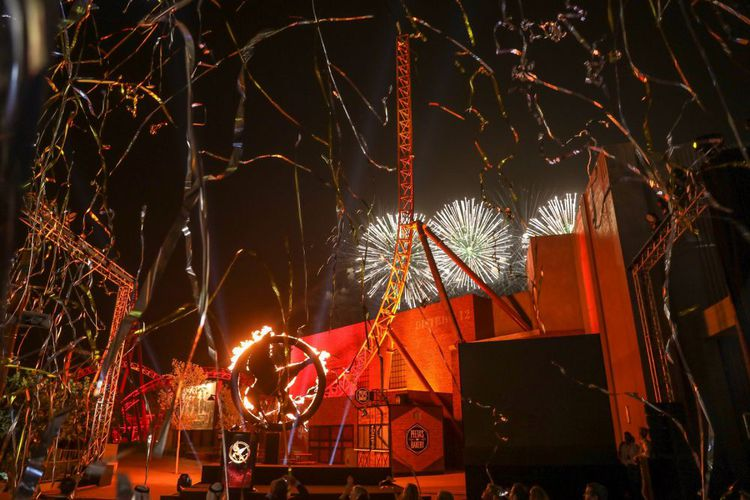
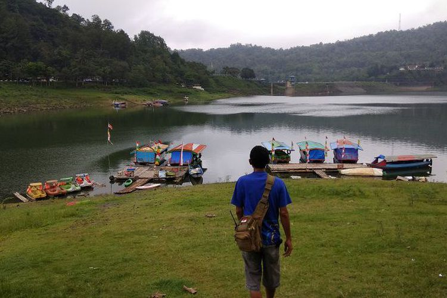
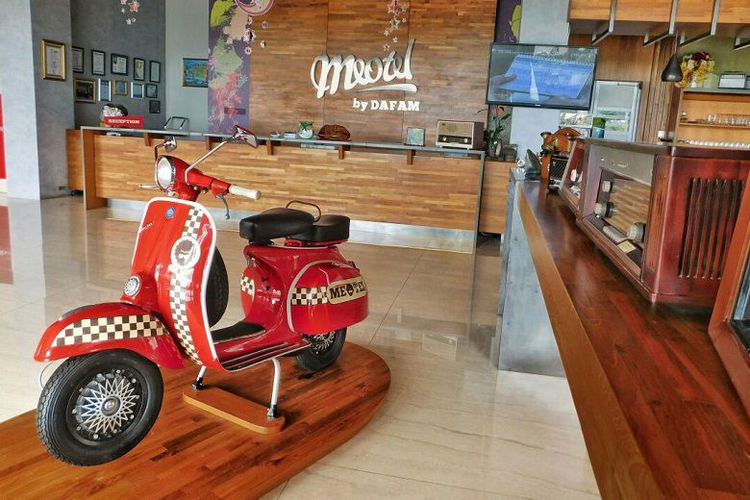
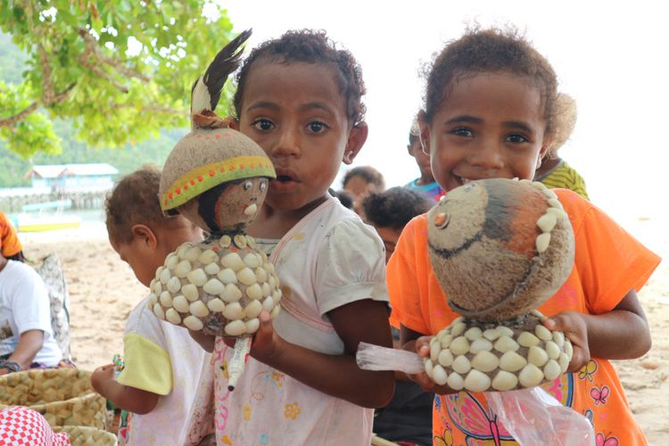

| MBC News | |||||||||||||||||||||||||||||||||||||||||||||||||||||||||||||||||||||||||||||||||||||||||||||||||||
| NATIONAL | REGIONAL | POLITICS | ECONOMY | ENTERTAINMENT | TECHNOLOGY | SPORT | TRAVEL | HEALTH | |||||||||||||||||||||||||||||||||||||||||||||||||||||||||||||||||||||||||||||||||||||||||||
Wahana Bertema Hunger Games Dibuka di DubaiKabar gembira bagi para penggemar film Hunger Games. Dubai Parks and Resorts di Uni Emirat Arab menghadirkan wahana dan atraksi "The World of The Hunger Games". Ini adalah sebuah wahana yang terinspirasi dari film karya Hollywood, Hunger Games. "Atraksi terbaru di zona LIONSGATE ini menghadirkan dua rollercoaster menegangkan, dan dengan pengalaman terbaru ini, kini kami memiliki 100 atraksi di dalam MOTIONGATETM Dubai, menghadirkan kegembiraan untuk para pengunjung dengan berbagai usia,” kata Chief Executive Officer DXB Entertainments PJSC, perusahaan pemilik Dubai Parks and Resorts, Mohamed Almulla sesuai siaran pers, Selasa (24/10/2017). |
Saatnya Kebumen Jadi Destinasi Wisata Utama di JatengKepala Dinas Kepemudaan, Olahraga, dan Pariwisata Kabupaten Kebumen, Jawa Tengah, Azam Fathoni menyebutkan bahwa Kabupaten Kebumen belum menjadi destinasi wisata utama. Namun, sejumlah upaya dilakukan Pemerintah Kabupaten Kebumen untuk menjadikan destinasi tujuan utama. "Memang Kebumen ini sebagai perlintasan ya. Jadi orang Purwokerto ke Yogyakarta lewat Kebumen. Orang Yogyakarta, Solo, mau ke Purwokerto lewat Kebumen. Kebumen saat ini belum menjadi destinasi wisata tujuan utama tapi sekarang kita mau membuat Kebumen jadi destinasi wisata tujuan," jelas Azam di Kebumen. |
||||||||||||||||||||||||||||||||||||||||||||||||||||||||||||||||||||||||||||||||||||||||||||||||||
Meotel, Pilihan Hotel Berkonsep Retro di KebumenBegitu tiba di lobi hotel Meotel Kebumen, Jawa Tengah, ada sebuah vespa dan becak mini yang menyambut kita. Di samping vespa berwarna merah, ada jejeran radio-radio antik aneka merek yang ditata pada sebuah papan kayu. Kesan antik juga semakin terasa dengan kehadiran sepeda onthel dan boks telepon merah di area lobi hotel. Di meja resepsionis, juga ada barang-barang antik seperti radio. Interior hotel bagian dalam Meotel juga penuh dengan lukisan kreatif. Ada beragam lukisan mulai dari peta wisata Kebumen hingga tokoh-tokoh animasi lainnya. |
|||||||||||||||||||||||||||||||||||||||||||||||||||||||||||||||||||||||||||||||||||||||||||||||||||
Aneka Oleh-oleh "Anti-mainstream" dari Raja AmpatSaat berkunjung ke Raja Ampat, KompasTravel mencoba bertanya ke beberapa warga terkait buah tangan dari Raja Ampat. Kebanyakan dari mereka merasa bingung, karena identitas daerah mereka ialah hasil laut. "Apa ya, kau bisa bawa ikan. Ikan banyak ditangkap dan harganya murah di sini," ujar Frans, salah satu warga Raja Ampat yang menjual sirih di pantai WTC, Raja Ampat, Sabtu (21/10/2017). Di pasar dan jalan utama Kota Waisai, banyak toko yang menjual pernak pernik Papua. Seperti koteka, noken, miniatur rumah suku asmat, patung dan yang lainnya. |
|||||||||||||||||||||||||||||||||||||||||||||||||||||||||||||||||||||||||||||||||||||||||||||||||||
| MBC News © 2017 | |||||||||||||||||||||||||||||||||||||||||||||||||||||||||||||||||||||||||||||||||||||||||||||||||||
| Minggu | Senin | Selasa | Rabu | Kamis | Jumat | Sabtu |
|---|---|---|---|---|---|---|
| 1 | 2 | 3 | ||||
| 4 | 5 | 6 | 7 | 8 | 9 | 10 |
| 11 | 12 | 13 | 14 | 15 | 16 | 17 |
| 18 | 19 | 20 | 21 | 22 | 23 | 24 |
| 25 | 26 | 27 | 28 | 29 | 30 | 31 |